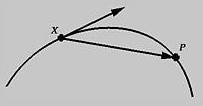

参数化曲线（一） #
参数化曲线的概念 #
空间中的参数化曲线（parametric curves）有如下方程：
F[0,1] -> (f(u), g(u), h(u))
上述方程中 u 即时参数，u 的定义域为 [0 - 1]，实际定义域可以是任意实数范围，为了简单起见这里设置的定义域（domain）为 [0 - 1]。
假设参数化曲线的坐标系是直角笛卡尔坐标系，则 f(u)、g(u)、h(u) 为坐标系的三个轴的坐标值。当 u 属于 0 到 1 区间时，x、y、z 分别如下：
x = f(u)
y = g(u)
z = h(u)
参数化方程就是定义一个参数 u，然后坐标轴的每一个分量都用含有 u 的方程表示，这就是参数化方程的概念。
如果去掉一个分量 h(u)，则参数化方程可以用来表示二维平面上的曲线。
圆的参数化方程 #
圆心为 (p, q), 半径为 r 的一般方程如下：
(x - p)^2 + (y - q)^2 = r^2
其参数化方程如下：
x(u) = rcos(2 * PI * u) + p
y(u) = rsin(2 * PI * u) + q
其中 u 属于 [0, 1]。2 * PI * u 为 (x(u), y(u)) 到圆心 (p, q) 的连线与水平 x 轴的夹角。
切向量和切线方程 #

曲线有两个点 x 和 p，当 p 沿着曲线向 x 移动时，向量 xp 慢慢变成了曲线在点 x 的切向量。
那么如何计算这个切向量呢？
假设曲线的参数化方程为 F(u)=(f(u), g(u), h(u))，只需要对参数化方程进行一次求导即可，即对 f(u)、g(u)、h(u) 分别进行求导。
tangetVec=F'(u)=(f'(u), g'(u), h'(u))
上式中的 tangetVec 不是单位向量，我们需要将向量标准化：
len = |tangetVec|
tangetVec/len
由直线参数化方程定义，以及切向量可以计算得到切线方程：
F(u) + t(F'(u))/|F'(u)|
(F'(u))/|F'(u)| 为单位切向量，F(u) 为曲线上的点，t 为参数。
（完）